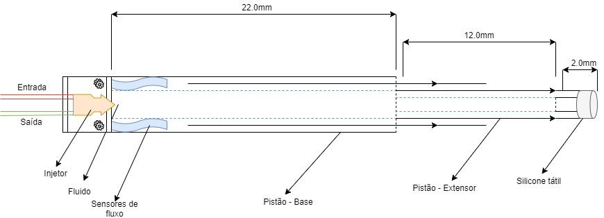
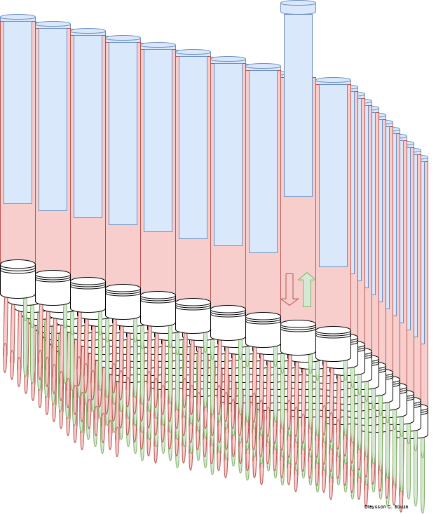

Consiste em proporcionar às pessoas cegas a possibilidade de tocar objetos e pessoas a longas distâncias tendo em vista que a máquina grava objetos e faces e as reproduz em qualquer lugar do mundo. Com o foco em uma rede social, visa auxiliar pessoa com problemas de visão a sentir outras pessoas, se comunicar de maneira totalmente alternativa e tocar objetos variados, dando um novo sentido á essas pessoas.
O projeto consiste em criar uma rede social com uma tela simples fácil de navegar que levaria aos usuários a reprodução de imagens de amigos e familiares inclusive outro objetos, com o auxilio de um dispositivo. Para esse dispositivo usaríamos como base algumas coisas já criadas, como por exemplo, a "Morphing table", "O blitab" e o "Ownfone", usando de mecanismos diferentes, como controladores e pistões hidráulicos para fazer o movimento das peças, que em conjunto de um algoritmo são capazes de formar qualquer forma, inclusive rostos de pessoas no qual objetivamente seria projetado.
O projeto foi pensado para auxiliar as pessoas com deficiência visual na interação com outras pessoas, convencionalmente no mundo moderno é comum ver quase todas as pessoas interagirem com as outras por redes sociais, a maneira mais comum é por texto e infelizmente pessoas cegas sem leitores adequados ficam desprovidas da maioria das tecnologias oferecidas ao público. Com o objetivo de propor uma interface limpa com apenas uma tela que reproduz imagens constantes conforme publicada pelos usuários, um pequeno chat para possíveis conversas.
O dispositivo entra como um recurso de conversor de braile, reprodutor facial e de objetos, tudo o que as pessoas digitarem será convertido em braile pelo dispositivo, ele será equipado com a capacidade de leitura de rosto, objetos e até microfone com alto falantes para total imersão do usuário, assim uma pessoa com deficiência visual poderá sentir o rosto de outra pessoa em qualquer lugar do mundo pois o dispositivo será capaz de reconstituir tudo o que puder, auxiliando na comunicação de pessoas com deficiências visuais.
 O projeto vai oportunizar as pessoas com deficiência visual o acesso a uma rede social onde poderão se relacionar com outras pessoas que tenham ou não algum tipo de deficiência. O dispositivo tátil vai fazer a parte da identificação dos usuários do site. O usuário vai primeiramente fazer um cadastro simples (pode acessar pela sua conta de outras redes sociais como o facebook) e vai colocar seus dados e características: se é homem ou mulher, seu nome, e-mail, data de nascimento, seu estado e cidade onde mora e também criar uma senha e nesse momento o dispositivo tátil vai fazer a detecção do rosto da pessoa e vai registrar no sistema essa imagem com uma descrição. No primeiro acesso vai ter algumas questões para responder, por exemplo: se prefere sair com amigos ou gosta de mais de ficar em casa ou se gosta mais de cerveja de vinho ou se não bebe. Quais são seus interesses, amizade, relacionamento casual ou relacionamento sério. Se o usuário tem filhos ou se deseja ter filhos. Se mora sozinho, com os pais, com amigos ou parceiro. Sua formação, ensino fundamental, ensino médio, graduação, pós-graduação ou mestrado. Qual sua religião se bebe ou se fuma. Também o usuário pode fazer uma breve descrição sobre ele mesmo. Na parte superior do site tem menus principais onde o usuário irá acessar o menu de mensagens, menu de visualizações de seu perfil, e menu de busca onde pode pesquisar uma pessoa pelo seu nome, cidade ou estado. No decorrer da página vai funcionar como a do facebook, onde tem links de notícias, fotos, e mensagens e descrição dos usuários.
-Acessibilidade na comunicação e oportunidade de conhecer pessoas novas.
-Interagir com qualquer objeto ou pessoa independente da distância.
-Modificar completamente a maneira de pessoas com deficiência visual de interagir com outras pessoas.
-Alto custo de produção.
-Raramente alguma pessoa com visão iria adquirir o dispositivo, exceto para familiares e amigos.
-Dispositivo seria pesado, e com os mecanismos para leitura facial sendo grandes deixaria difícil o transporte.
Voltar ao topo